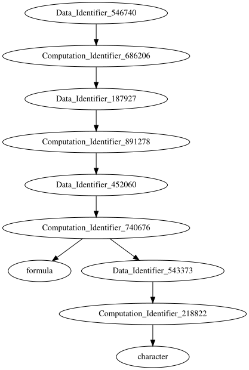

2021-09-13
This is a brief demonstration of the main actors used in the largerscale system, with emphasis on their structure and use. The motivation behind these is given in other documents. This demonstration emulates two machines; one local to the user, and one remote worker session.
The largerscale library is initiated and data is read in from (imaginary) HDFS. The read.hdfs() function produces a computation object internally, and sends it to the remote worker, which operates based on the computation, creating some remote data output (shown in the next section). The function returns a data object locally that operates as a proxy to the remote data.
library(largerscale)
dfdata <- read.hdfs("/some/file/path")
str(dfdata) ## Data:
## Identifier: Identifier: 543373
## Computation Identifier: Identifier: 218822The remote machine has a new computation added to it’s computation pool, which may serve as a more general work queue. It receive()s the computation from the pool, and then performs the computation, which produces a fixed data object. Note that the fixed data object has a value. The computation and the data object are added to the remote machine’s datapool.
(computationqueue()) ## Queue: 1 Elements (dfcomp <- receive()) ## Computation Identifier 218822 str(dfcomp) ## Computation:
## Identifier: Identifier: 218822
## Input: List of 1
## $ : chr "/some/file/path"
## Value: function (path)
## Output: Identifier: 543373 (computationqueue()) ## Queue: 0 Elements str(do(dfcomp)) ## 'data.frame': 100 obs. of 2 variables:
## $ y: int 1 2 3 4 5 6 7 8 9 10 ...
## $ x: int 1 2 3 4 5 6 7 8 9 10 ... (datapool()) ## Pool: 2 Items str(datapool()) ## Pool: 2 Items
## 218822 : Computation:
## Identifier: Identifier: 218822
## Input: List of 1
## $ : chr "/some/file/path"
## Value: function (path)
## Output: Identifier: 543373
## 543373 : Identifier: Identifier: 543373
## Value: 'data.frame': 100 obs. of 2 variables:
## $ y: int 1 2 3 4 5 6 7 8 9 10 ...
## $ x: int 1 2 3 4 5 6 7 8 9 10 ...
## Computation: Identifier: 218822Concurrently at the local machine, the value of the data may be requested. From the data identifier, it is located, and the remote machine sends it directly. Here it is available immediately, but it could very well block or respond with non-availability if it is still being processed. In this case, what was “read” from HDFS is a data frame, as shown in the str() result A linear model is requested to be fit on this data, using the data object and a formula.
str(df <- value(dfdata)) ## 'data.frame': 100 obs. of 2 variables:
## $ y: int 1 2 3 4 5 6 7 8 9 10 ...
## $ x: int 1 2 3 4 5 6 7 8 9 10 ... (lmdata <- do(lm, list(y ~ x, data=dfdata))) ## Data Identifier 452060Again, the remote machine receive()s the computation, do()es it, and adds the results to the datapool.
(lmcomp <- receive()) ## Computation Identifier 740676 invisible(do(lmcomp))
(datapool()) ## Pool: 4 ItemsA summary is run on the result, without waiting for any value to be returned.
(sdata <- do(summary, lmdata)) ## Data Identifier 187927As before - this is a loop that would run continuously
(scomp <- receive()) ## Computation Identifier 891278 invisible(do(scomp))
(datapool()) ## Pool: 6 ItemsThe value of the summary is requested. The call capture issue, as given in another document, rears it’s head, but is NULLed here for simplicity. The coef()ficients of the summary are requested.
s <- value(sdata)
s[1] <- NULL # get rid of call capture !!
(s) ##
## Call:
## NULL
##
## Residuals:
## Min 1Q Median 3Q Max
## -2.680e-13 -4.300e-16 2.850e-15 5.302e-15 3.575e-14
##
## Coefficients:
## Estimate Std. Error t value Pr(>|t|)
## (Intercept) -5.684e-14 5.598e-15 -1.015e+01 <2e-16 ***
## x 1.000e+00 9.624e-17 1.039e+16 <2e-16 ***
## ---
## Signif. codes: 0 '***' 0.001 '**' 0.01 '*' 0.05 '.' 0.1 ' ' 1
##
## Residual standard error: 2.778e-14 on 98 degrees of freedom
## Multiple R-squared: 1, Adjusted R-squared: 1
## F-statistic: 1.08e+32 on 1 and 98 DF, p-value: < 2.2e-16 (cdata <- do(coef, sdata)) ## Data Identifier 546740The remote machine repeats the evaluation loop
(ccomp <- receive()) ## Computation Identifier 686206 (do(ccomp)) ## Estimate Std. Error t value Pr(>|t|)
## (Intercept) -5.684342e-14 5.598352e-15 -1.015360e+01 5.618494e-17
## x 1.000000e+00 9.624477e-17 1.039018e+16 0.000000e+00Given that all of the computations and data keep track of the identifiers of their dependencies, an abstract dependency graph exists. This graph does not (and should not) exist literally, but in the case of machine failure, with replication of the computation objects and some data objects, the data can be recreated. Here we compile the abstract dependency graph to DOT notation.
dependencygraph(cdata) ## digraph G {
## Data_Identifier_546740 -> Computation_Identifier_686206 ;
## Computation_Identifier_686206 -> Data_Identifier_187927 ;
## Data_Identifier_187927 -> Computation_Identifier_891278 ;
## Computation_Identifier_891278 -> Data_Identifier_452060 ;
## Data_Identifier_452060 -> Computation_Identifier_740676 ;
## Computation_Identifier_740676 -> " formula " ;
## Computation_Identifier_740676 -> Data_Identifier_543373 ;
## Data_Identifier_543373 -> Computation_Identifier_218822 ;
## Computation_Identifier_218822 -> " character " ;
## }And display it visually with graphviz
gpath <- tempfile(fileext=".svg")
g <- pipe(paste0("dot -Tsvg >", gpath))
capture.output(dependencygraph(cdata), file=g)